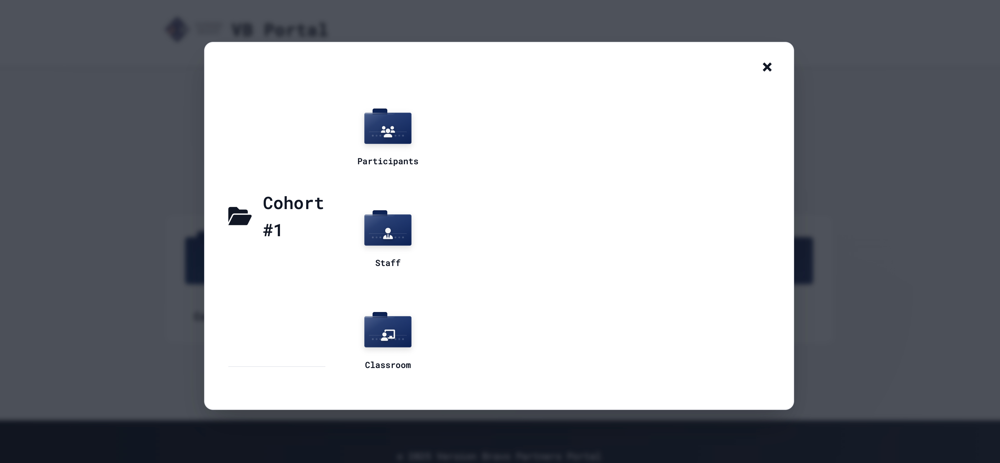

Project Gallery
Portal interfaces and functionality

Member Dashboard Home Screen

Content Library and Document Repository
A comprehensive alumni portal with member management, event registration, and content delivery for intelligence veterans.
Community platform for intelligence veterans
The Version Bravo Portal was developed as a central platform to connect and serve the community of intelligence service veterans. The portal provides a secure environment for members to access exclusive content, register for events, network with peers, and maintain their connection to the community. The system features robust security, personalized user experiences, and comprehensive administrative tools.
Note: Due to the sensitive nature of this system and its user base, certain technical details and specific functionalities have been abstracted in this presentation.
Capabilities and functionality
Multi-factor authentication and granular access controls based on member status, career history, and administrative roles.
Comprehensive event registration system with attendance tracking, payment processing, and personalized event recommendations.
Secure document storage with permission-based access for sharing historical materials, presentations, and publications.
Professional networking capabilities for members to connect based on shared service history, interests, or career paths.
Targeted communication channels with personalized news feeds and notification preferences.
Comprehensive backend for organization leadership to manage membership, analyze engagement, and track activities.
Portal interfaces and functionality
Technologies and architecture
Overcoming technical hurdles